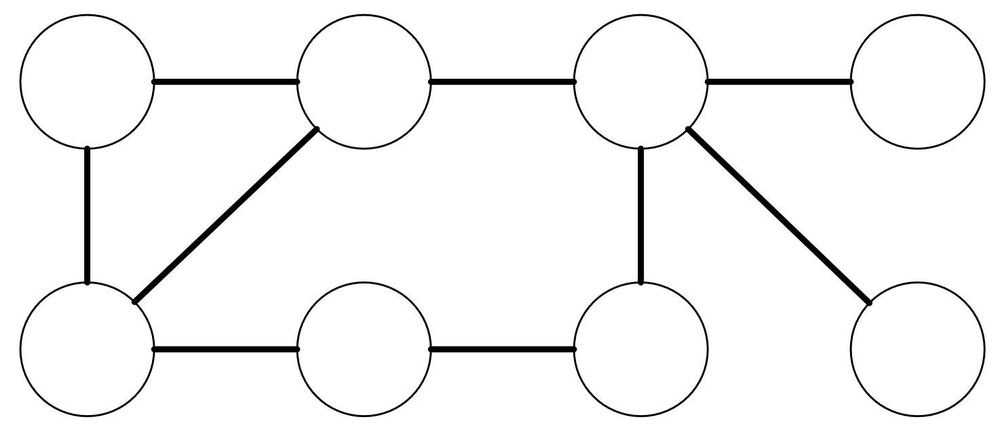
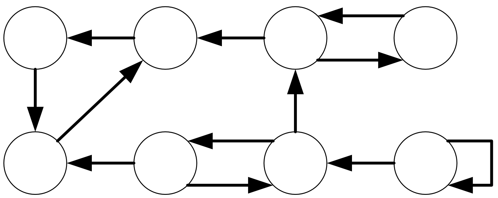
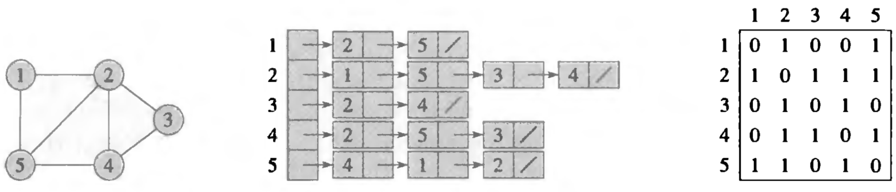
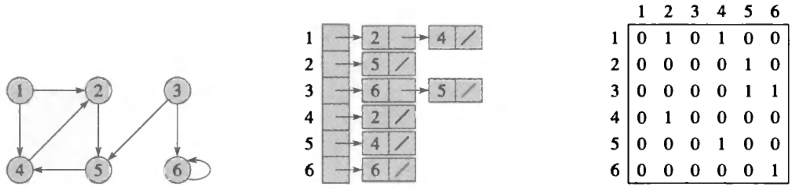
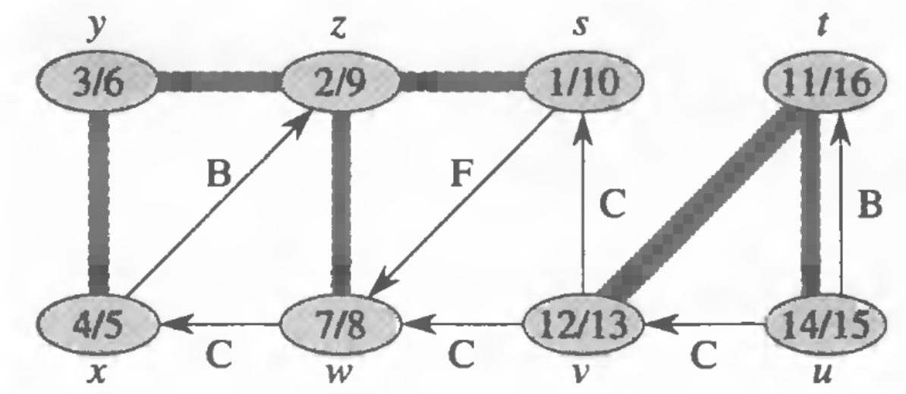
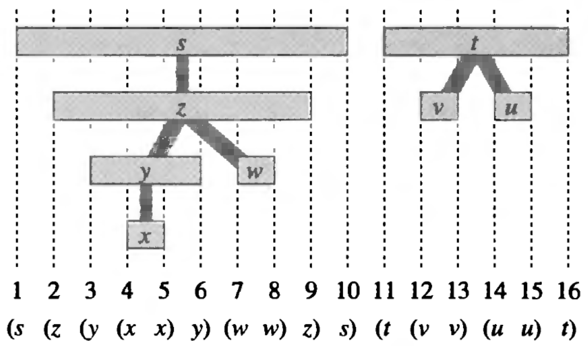
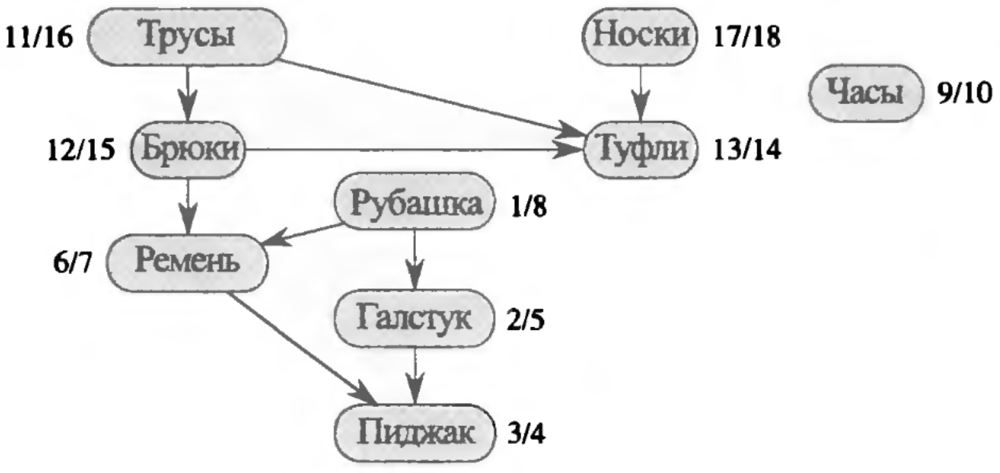
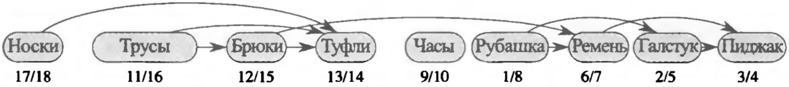

Если рёбра графа имеют направление, такой граф называется ориентированным

Для программной обработки граф может быть представлен в двух видах:
Матрицы смежности неэффективны для хранения разреженных графов – графов с большим колчеством вершин и малым количеством связей


Также необходимо задать следующие дополнительные свойства всем вершинам:
Цвета используются следующим образом:
Также для поиска в ширину вводится вспомогательная очередь (FIFO) – $Q$
Алгоритм поиска в ширину делится на две части:
Пока очередь $Q$ не пуста, выполнять:
Алгоритм поиска в глубину, а также лес поиска и метки времени, получающиеся в результате его работы, имеют широкий ряд свойств, смысл большинства из которых будет понятен позже. Поэтому рассмотрим только некоторые из них:
В результате любого поиска в глубину на графе $G$ для любой пары вершин $u$ и $v$ графа $G$ выполняется только одно из следующих свойств:
Таким образом, вершина $v$ является потомком $u$ в дереве поиска в глубину тогда и только тогда, когда: $u.d < v.d < v.f < u.f$
Из теоремы о скобках следует, что метки открытия и завершения на вершинах образуют правильную скобочную структуру




Таким образом, топологическая сортировка – сортировка по убыванию времени завершения работы с вершиной
| Операция | Сложность |
|---|---|
| Поиск в ширину | $O(|V|+|E|)$ |
| Поиск в глубину | $\Theta(|V|+|E|)$ |
| Топологическая сортировка | $\Theta(|V|+|E|)$ |